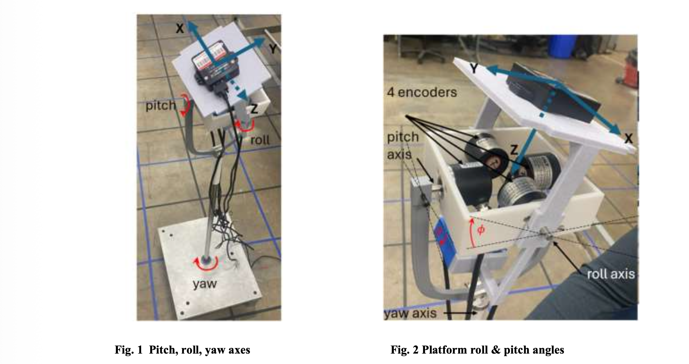

// 004 · projects
Things I've built.
Lymphedema Scanner
iOS app using ARKit & SceneKit with vector-grid facial volume capture achieving 95% accurate lymphedema detection. Won first place at OSU College of Medicine Appathon.
func session(_ s: ARSession,
didUpdate anchors: [ARAnchor]) {
guard let face = anchors.first
as? ARFaceAnchor else { return }
let grid = VectorGrid(face.geometry)
DispatchQueue.main.async {
self.volumeDelta = grid.delta()
self.scanProgress = grid.progress()
}
}GenAI & MCP Systems
Built MCP tools for internal LLM inference pipelines at BMW. Improved data retrieval efficiency by 40% and cut model training cycles by 30%.
@server.call_tool()
async def call_tool(name: str, args: dict):
async with pool.acquire() as conn:
rows = await conn.fetch(args["sql"])
return [TextContent(
type="text",
text=json.dumps(
[dict(r) for r in rows])
)]
Wildfire Detection Drone
Lightweight on-drone ML models for aerial wildfire classification. Custom IMU with Kalman Filter.
class WildfireCNN(nn.Module):
def __init__(self):
super().__init__()
self.backbone = nn.Sequential(
nn.Conv2d(3, 16, 3, padding=1),
nn.ReLU(), nn.MaxPool2d(2),
nn.Conv2d(16, 32, 3, padding=1),
nn.ReLU(), nn.AdaptiveAvgPool2d(4),
)
self.head = nn.Linear(512, 2)
def forward(self, x):
return self.head(
self.backbone(x).flatten(1))Tumor Microenvironment Analysis
Analyzed 1.2M+ spatial data points from 30+ brain tumors. Designed fencing algorithms to cluster immune cells around cancer cells, revealing ICI response correlations. Published in iScience.
def dbscan_fraction_near_cancer(
df, radius=50, eps=35, min_samples=5):
cancer = df[df["cell_type"] == "cancer"][
["x", "y"]].values
immune = df[df["cell_type"] == "immune"][
["x", "y"]].values
tree = KDTree(cancer)
dists, _ = tree.query(immune, k=1)
near = immune[dists.flatten() <= radius]
if len(near) < min_samples:
return 0.0, -1
labels = DBSCAN(
eps=eps, min_samples=min_samples
).fit_predict(near)
clusters = len(set(labels) - {-1})
return len(near) / len(immune), clusters
3-DOF Attitude Test Stand
Designed and built a 3-axis attitude control test stand for drone flight dynamics. Custom encoder-driven rig measuring pitch, roll & yaw. Submitted to AIAA SciTech 2026.
function [q, P] = ekf_update(q, P, gyro, dt)
F = state_transition(q, gyro, dt);
Q = 1e-4 * eye(4);
P = F*P*F' + Q;
z = encoder_meas();
H = meas_jacobian(q);
K = P*H' / (H*P*H' + R);
q = q + K*(z - h(q));
q = q / norm(q);
P = (eye(4) - K*H) * P;
end